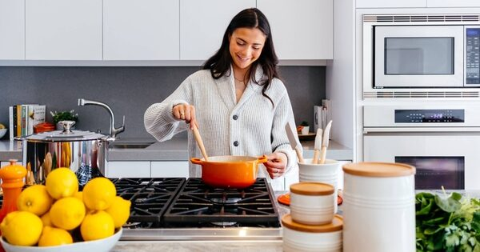
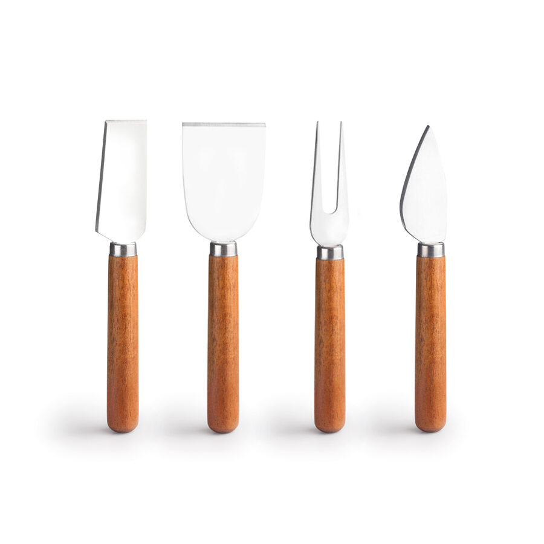

Ecommerce · 2026
Ibili Home
Página de inicio para una tienda de utensilios de cocina construida y personalizada con Bootstrap.

Contexto
Presentar la marca
El ejercicio consistía en desarrollar el front-end de un ecommerce sin carrito ni sistema de pago.
La página principal debía comunicar una cocina práctica y mostrar productos destacados con una navegación clara.
Proceso
Personalizar componentes
Se utilizaron la cuadrícula, la navegación, las tarjetas y los botones de Bootstrap. Después se adaptaron los colores y la tipografía para evitar el aspecto predeterminado del framework.

Resultado
Una entrada al catálogo
La home presenta la propuesta de valor, tres productos destacados y accesos directos al catálogo y a la ficha de producto.
Ficha técnica
- Año: 2026
- Asignatura: Diseño Web
- Herramientas: HTML, CSS y Bootstrap
- Tipo: Ecommerce ficticio